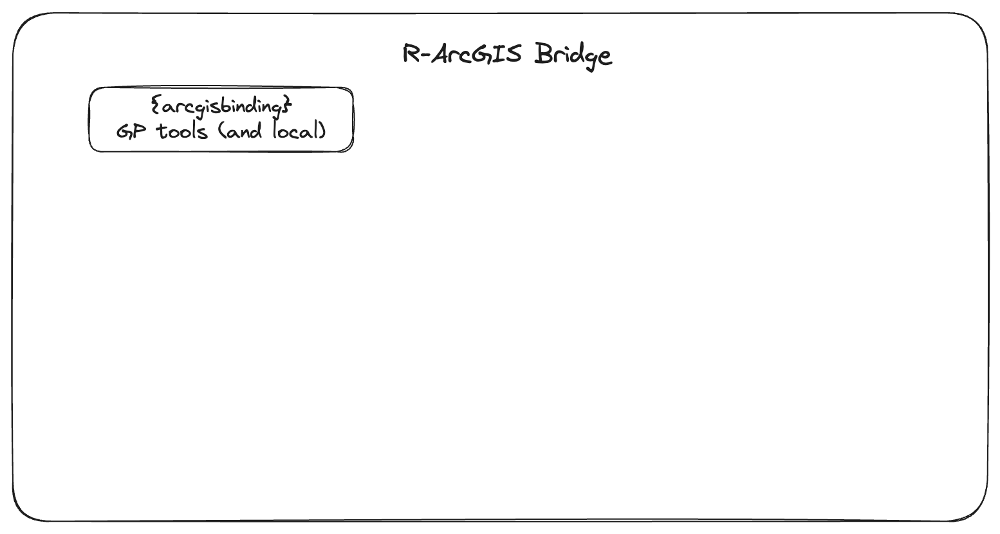
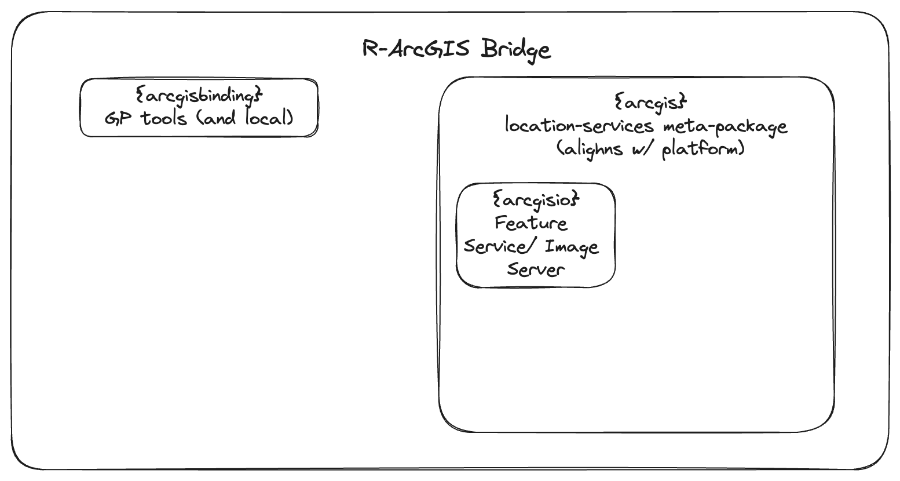
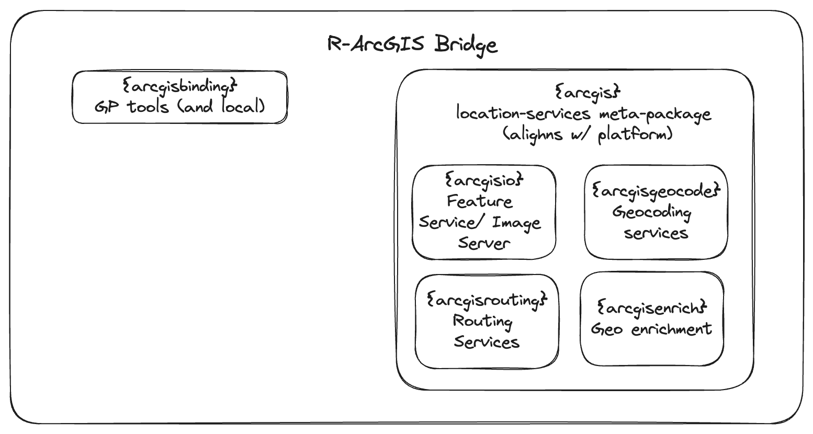
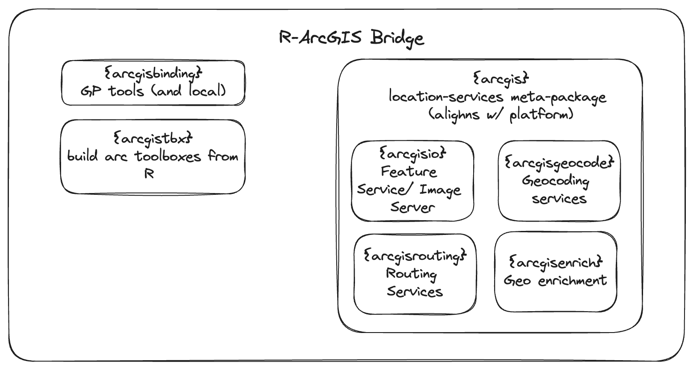

ArcGIS R API direction
May 22nd, 2023
Recently discussed R API with Lauren and there are a few key take-aways.
- Clean up user stories
- notably that mentioning {arcgisbinding}’s ability to read remote services make the story muddy
- Focus on capabilities more than user stories
- Initial release should support read at minimum and ideally write / update if feasible
- can do incremental release at our own page with dev version on GitHub
- Should be on developer page as
ArcGIS API for Ror something similar
My thoughts:
Path forward for ArcGIS API for R
⁄We work towards an R metapackage like tidyverse or tidymodels. The metapackage will be called arcgis it will be composed of small R packages each with a specific purpose.
The first will support portal I/O and will cover only Feature Service, Image Server, and Map Severs–no tile support. Perhaps we call this arcgisio.
When arcgis is installed, arcgisio will be installed. Calling library(arcgis) will load arcgisio. The next package can be arcgisrouting which will do, you guessed it, routing. When we release that it will be incorporated into arcgis.
Future of R-ArcGIS Bridge
I personally like Dima’s definition. The bridge is anything that make ArcGIS and R work together. Right now this is only arcgisbinding.. Right now “R-ArcGIS Bridge” refers to the R package arcgisbinding and the capability of ArcGIS to have an embedded R executor.
There are three possible ways I see us handling this:
- When we release the
arcgisR package I think this should be part of the “R-ArcGIS bridge” - If we don’t, then we make it very clear that the R-ArcGIS bridge is the ability to call R from ArcGIS and thus create GP tools using R scripts.
- We then be very clear that {arcgisbinding} is the R package that can be used from R to interact with ArcGIS Pro.
- We refuse to acknowledge
arcgisbindingas an R package distinct from the bridge and refuse to incorporatearcgisinto the R-ArcGIS bridge umbrella. If so, it’s in our best interest to rename the R package fromarcgisbindingtorarcgisbridgeso our story is clear.
Additional development tasks we should endeavor
Embedded R GP script tools in ArcGIS pro
an R package to create ArcGIS Toolboxes from code. Notably this would mean that the R scripts we write define the argument names and types. Currently this is done manually. Prototype exists today.
The R-ArcGIS Bridge was announced almost 8 years ago at the 2015 Esri User Conference. It was the 3rd highlight of the conference.
“This project is about helping the ArcGIS and R users become more successful in combining these technologies…” Steve Kopp
The R-ArcGIS bridge at release consisted of a single R package called {arcgisbinding}. The R package, most notably, enabled R developers to create custom Geoprocessing Script tools using R as well as a way to read and write to local data sources in ArcGIS Pro directly from R. The R package and R-ArcGIS bridge have become synonymous.
Since 2015 the ArcGIS Ecosystem has grown considerably and so has the R ecosystem has grown exponentially. As our product offerings and the capabilities of the R langauge have grown the R-ArcGIS Bridge has not reflected these changes.
Our users are not only those who use ArcGIS Pro, but also those who use ArcGIS Online or ArcGIS Enterprise, and even extend to those folks who consume data from ArcGIS Enterprise. Our software reaches far beyond those who work just in Pro. This is indicated by the development of ArcGIS Platform.
ArcGIS platform provides flexible data hosting in the cloud and ready to use location services. Data are easily accessible with Esri provided APIs and SDKs while location location services are just a REST request away.
R users are data consumers, providers, and analyzers. ArcGIS platform provides capabilities that are desirable for R users embedded in ArcGIS organizations such as data hosting, geocoding, routing, spatial analytics, and other data to enrich their analyses.
We haven’t yet given the R community the support they need to use our Platform services. The R community has already beat us to the punch. There have been a number of grassroots packages such as arcpullr, esri2sf, getarc, and getdata for accessing ArcGIS hosted data. And when it comes to routing and geocoding R users turn to other pre-built solutions.
It’s time we step up and improve our support for the R community. We’re going to do that by adding a new package to the R-ArcGIS Bridge for the first time in 8 years. The {arcgis} R package will be a new programmatic interface to pre-built data and location services.
{arcgis} will be a “meta-package” which is an R package that loads multiple related packages. This is a technique that is done for collections of packages that make up an “ecosystem” and is demonstrated by {tidyverse}, {tidymodels}, {easystats}, and for the large number of football nerds the {nflverse}. The meta-package approach is one that allows for logical partitioning of functionality into small easy to manage units.
For example, the tidyverse loads the packages dplyr, stringr, and lubridate (among others). dplyr is for data manipulation, string is for string manipulation, and lubridate is for data handling. One advantage of this is that users need not load every package if they do not want to. The meta-package acts as a convenience.
We will take a similar approach in which we build a “constellation of R packages” pertaining to ready made location-services that are available via REST API under the {arcgis} meta-package. The first of these packages will be {arcgisio} (name pending) focusing on hosted data whether it be ArcGIS Online, Portal, or living atlas. This package will provide the basic functionality for reading feature services and image layers while also providing write capabilities to feature services.
Today, the R-ArcGIS Bridge today contains only the R-ArcGIS Bridge

We want to expand this to begin to support ArcGIS data and location services starting with data hosting

Once the building blocks are in place, expanding {arcgis} will be relatively simple. We can continue improving the R-ArcGIS Bridge by adding to the arcgis meta-package constellation with other small packages for pre-built location services namely geocoding, routing, and enrichment to begin with.

With this change the R-ArcGIS Bridge is no longer synonymous with {arcgisbinding} and ArcGIS Pro but our wider ecosystem. We can then begin to add other R packages to our ecosystem that are not strictly related to location services. For example, it would be in our best interest to make it very easy for R users to develop ArcGIS toolboxes similar to Python toolboxes. We can (and likely should) down the road build a package to assist in this.

https://www.esri.com/about/newsroom/arcuser/10-takeaways-from-the-2015-esri-user-conference/
https://www.esri.com/about/newsroom/arcuser/bringing-the-r-and-arcgis-communities-together/